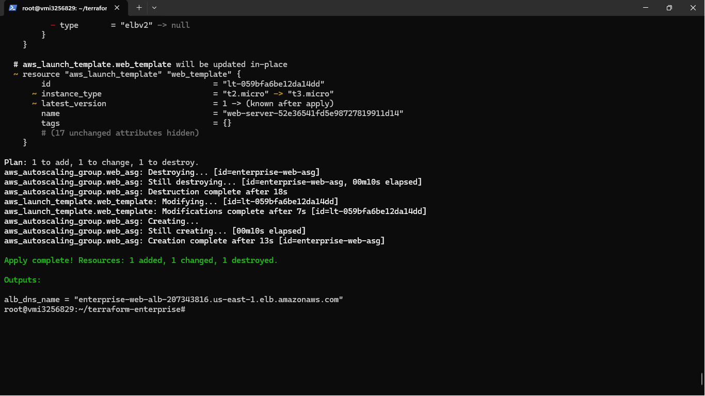

Projects / Project 05
Multi-AZ web tier with Terraform
My first project fully written as code: a load-balanced, auto-scaled web tier across two Availability Zones, with servers kept in private subnets.
The problem
After building networks and servers by hand, I wanted an environment that survives the loss of a whole data centre and can be recreated from code instead of from memory: no public IPs on servers, no single point of failure in the web tier, and every change reviewable before it is applied.
Architecture
What I built
- Custom VPC instead of the default one, with public, private-compute and data subnets in two AZs, an internet gateway, and separate route tables.
- One NAT gateway per AZ so private servers can fetch updates without being reachable from the internet, and so an AZ failure does not remove the other AZ's outbound path.
- Application Load Balancer spreading traffic across the web fleet and health-checking it.
- Launch template and Auto Scaling group (minimum two instances across zones) that replace failed servers automatically. The launch template bootstraps Apache on Amazon Linux 2023.
- Security-group chaining: the ALB group accepts HTTP from the internet; the web group accepts traffic only from the ALB's security group, not from CIDR ranges.
Evidence

Issues I hit and fixed
DependencyViolation on terraform destroy
Cause: a security group could not be deleted while network interfaces from the instances were still detaching.
Fix: added a deliberate wait so the interfaces are released before the security layer is removed, and learned to reason about resource lifecycle ordering.
Risk of drift when managing from one machine
Fix: made terraform plan a mandatory step before every apply so the desired state in code is compared with what is actually in AWS.
Limitations
Scope. This is a self-directed lab, and no live endpoint is published.
- Source not published. The Terraform code for this project is not in a public repository, so you can see the write-up and the apply output above but cannot review the HCL. Projects 6 and 7 are the ones with reviewable Terraform.
- No database yet. The data subnets are reserved for a future database tier; nothing is deployed in them.
- HTTP only, no TLS or domain.